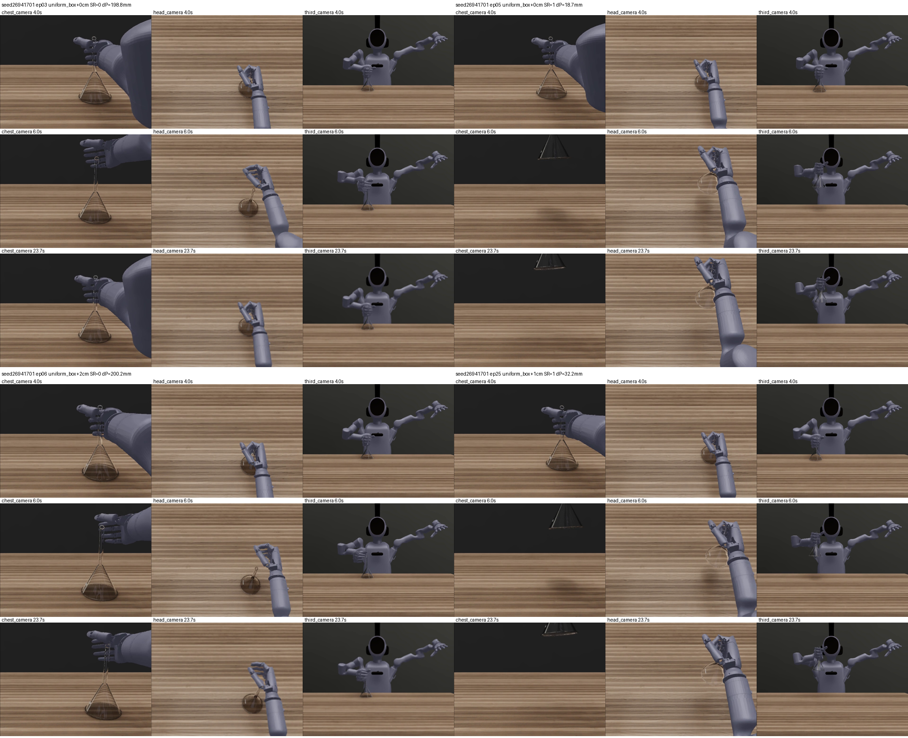
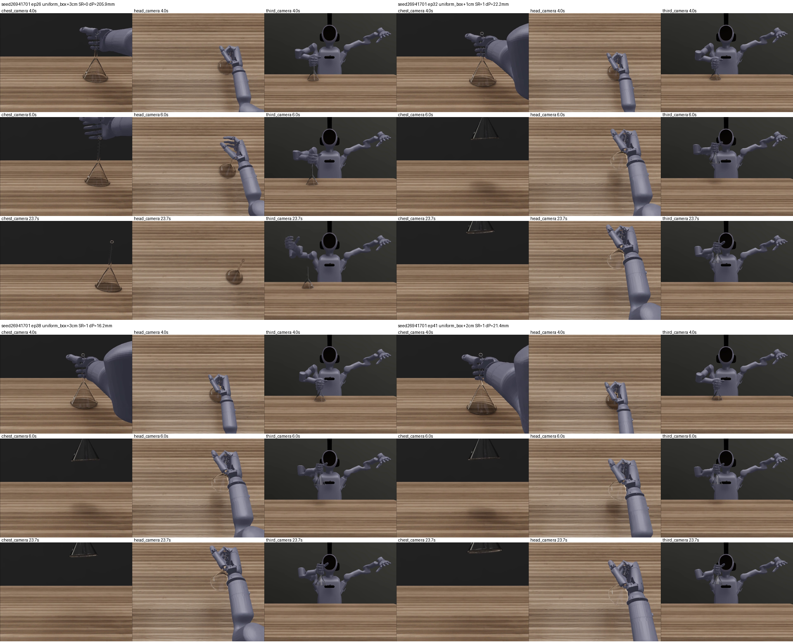
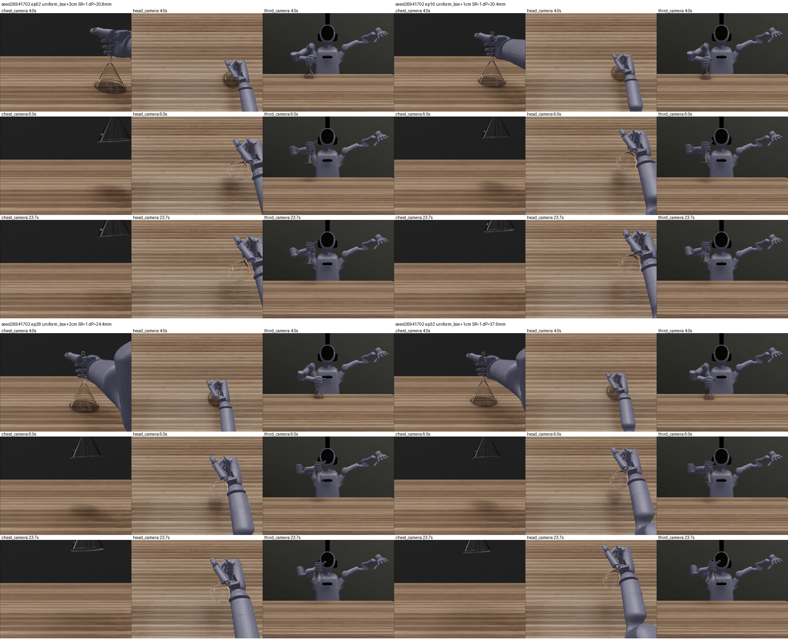
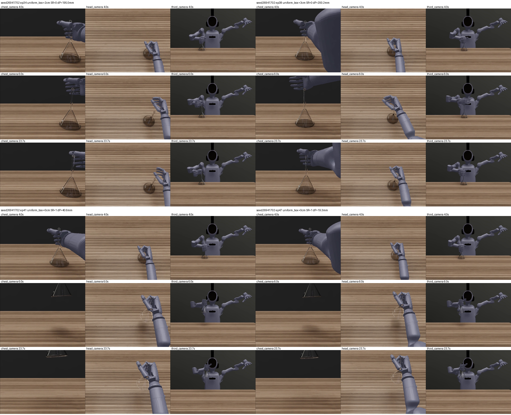
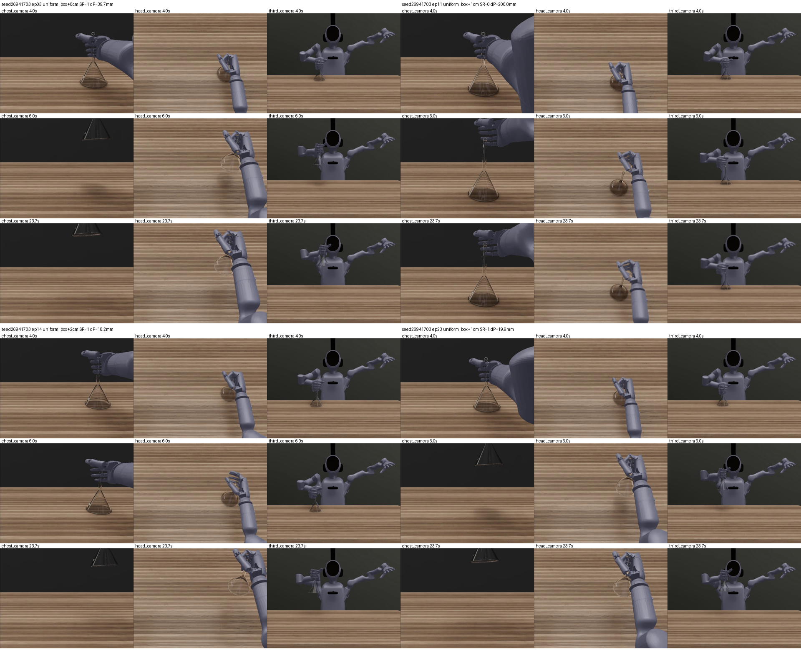
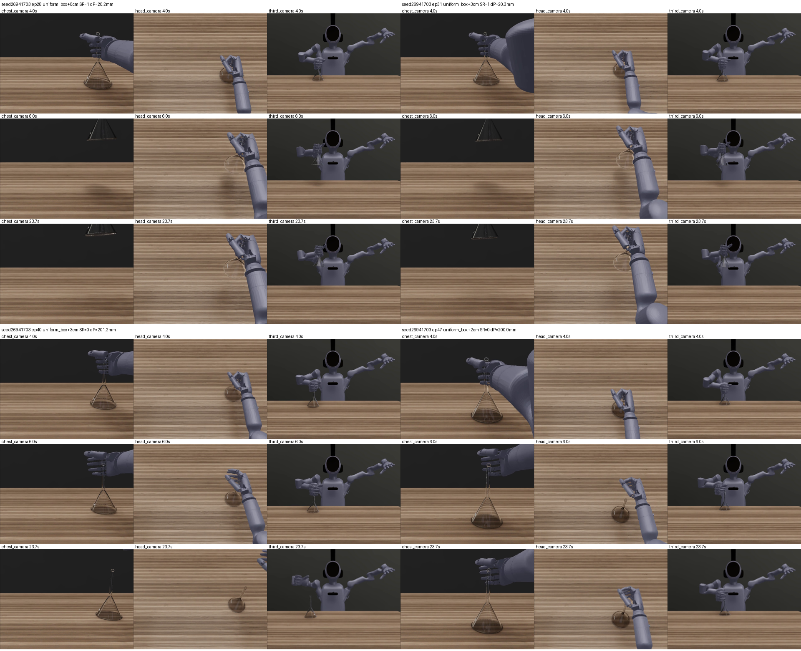

SR128/150，SpatialSSR45/150；论文目标68% / 30%。单一EMA检查点，3个全新评测seed各50回合；失败完整保留。漏斗现在DP与ACT均通过，整体4/42方法、1/21双方法物体通过。
SpatialSSR只计算物体在实际24秒终止时到静置初始位置加抬升量的误差≤20mm，NativeSR独立统计；力和几何不加入SSR。SSR正好达到门槛，没有额外余量。
| Seed | SR | SpatialSSR |
|---|---|---|
| 26941701 | 40/50 (80.0%) | 17/50 (34.0%) |
| 26941702 | 45/50 (90.0%) | 14/50 (28.0%) |
| 26941703 | 43/50 (86.0%) | 14/50 (28.0%) |
采集±3cm；+0/+1/+2/+3cm对应测试±3/4/5/6cm。正式结论沿用预登记的150回合汇总，不在看到结果后改为其他分档。
| 档位 | 回合数 | SR | SpatialSSR |
|---|---|---|---|
| uniform_box+0cm | 39 | 97.44% | 25.64% |
| uniform_box+1cm | 39 | 97.44% | 46.15% |
| uniform_box+2cm | 36 | 75.00% | 22.22% |
| uniform_box+3cm | 36 | 69.44% | 25.00% |
以下为同一次正式测试的成功和失败示例，三相机原文件，未经转码。
每个seed×每个偏移档，选终点误差最大回合及另一个最接近20mm的抓起成功回合；选择在解码前固定。共24回合、216张原始关键帧。未见明显穿模或玻璃材质异常；这不是全150视频逐帧人工审阅，也不证明亚毫米碰撞形状零穿透。
胸前相机抬升后存在上边缘裁切，头部相机有手部遮挡和贴边；第三相机保留目标及场景。沿用既有冻结视角，用户视角复核仍待决定，原登记未撤销。






训练为412k父模型再训练6k，总418k；继承normalizer，25%开局/25%闭合窗/50%均匀采样，未增加噪声。采集、训练、测试均为Pro6000。吞吐15.84回合/GPU小时，按包含Kit启动的driver时长计算，不含平台启动前等待。